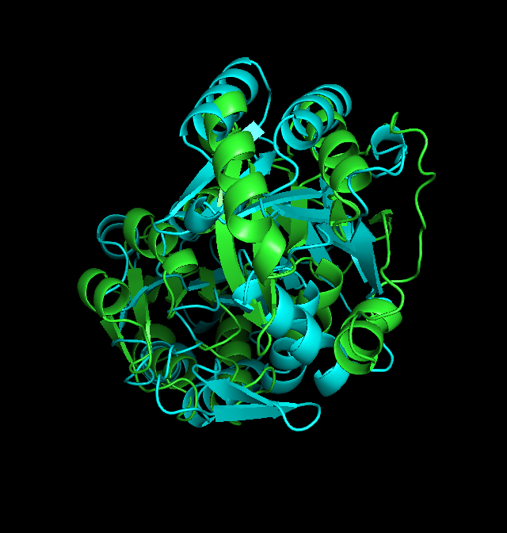
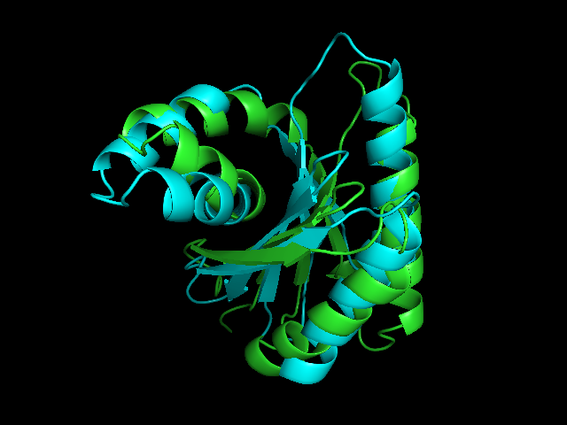

This report compares the detection capabilities of:
I chose reseek and foldseek for comparison because they are created on same idea but reseek is more complex model.
Those models add additional features (alphabets) with fixed dimensions (symbols) which are used to describe certain property of folded protein. As result we obtain for every residue tuple of symbols and we can compare every feature with corresponding datasets using standard local and global alignments algorithms translating the NP-hard problem of 3D spatial superposition into a 1D sequence alignment problem, which can be solved in polynomial time $\mathcal{O}(N^2L^2)$ using dynamic programming.
Model complexity:
Bibliography
I mostly based on Robert Edgar's seminar - Link
Description
This table summarizes the performance, runtime, and total hit count across all executed methods:
| method | runtime_seconds | total_queries | queries_with_hits | queries_0_hits |
|---|---|---|---|---|
| blast | 1.5 | 433 | 180 | 253 |
| tmalign | 2235.55 | 433 | 433 | 0 |
| reseek | 3.84 | 433 | 429 | 4 |
| foldseek | 7.5 | 433 | 170 | 263 |
We can see that only tmalign finds hits for all queries, that is because it compares all structures so it always finds some result regardless of biological relevance. Reseek finds much more results than foldseek, that is because reseek alignment score score consists of more features (alphabets).
Methodology
Here we filter results only by E-score (probability of getting hit by randomly creating sequence), to check sensitivity.
Description
| Structural Method | Found by Both | False Positives (Seq only) | False Negatives (Struct only) |
|---|---|---|---|
| tmalign | 180 | 0 | 211 |
| reseek | 178 | 2 | 63 |
| foldseek | 153 | 27 | 14 |
False negatives represent sequences missed by sequential analysis (BLAST) but successfully mapped by structural methods. We assume that those structures are homologs. False positive are those sequences that are found by blast but are not found by structural methods. we can see that most effective method is tmalign, but is much more complex.
We should also notice that ($253-211=42$) can be true negatives because they were not captured by tmaling as well as blast. It support thesis that structures are more conserved than sequences.
Methodology
We filter results by TMscore to obtain only homologous results. TMscore in reseek and foldseek is estimated.
| query | target | score | evalue |
|---|---|---|---|
| WP_234943728 | WP_020862785 | 0.974 | 0 |
| WP_261156652 | WP_020862785 | 0.964 | 0 |
| WP_009886004 | WP_020862785 | 0.9544 | 0 |
| WP_009885614 | WP_020863090 | 0.8994 | 0 |
| WP_014894048 | WP_013729896 | 0.8948 | 0 |
| WP_010869411 | WP_020862584 | 0.8701 | 0 |
| WP_009885968 | WP_020862755 | 0.8637 | 0 |
| WP_009885899 | WP_013729497 | 0.857 | 0 |
| WP_009885821 | WP_008362910 | 0.8548 | 0 |
| WP_009885894 | WP_020862476 | 0.8525 | 0 |
| query | target | score | evalue |
|---|---|---|---|
| WP_009885894 | WP_020862476 | 0.9838 | 1.38e-07 |
| WP_010869332 | WP_020863005 | 0.9784 | 4.09e-07 |
| WP_009885807 | WP_020862878 | 0.9768 | 5.34e-07 |
| WP_009885568 | WP_020863082 | 0.9729 | 9.62e-07 |
| WP_009885968 | WP_020862755 | 0.9686 | 1.67e-06 |
| WP_009885829 | WP_020862637 | 0.9685 | 1.7e-06 |
| WP_009885621 | WP_017698247 | 0.9665 | 2.14e-06 |
| WP_010869411 | WP_020862584 | 0.9647 | 2.61e-06 |
| WP_009885989 | WP_020863013 | 0.963 | 3.14e-06 |
| WP_010869439 | WP_020862921 | 0.9623 | 3.37e-06 |
| query | target | score | evalue |
|---|---|---|---|
| WP_010869411 | WP_020862584 | 0.8782 | 5.081e-11 |
| WP_009885634 | WP_013729566 | 0.8278 | 7.288e-11 |
| WP_009885894 | WP_020862941 | 0.8209 | 3.018e-18 |
| WP_009885786 | WP_020862730 | 0.8026 | 2.137e-15 |
| WP_009885967 | WP_020862509 | 0.802 | 3.171e-16 |
| WP_010869439 | WP_020862509 | 0.7346 | 4.062e-16 |
| WP_010869456 | WP_020862476 | 0.731 | 1.759e-12 |
| WP_009885813 | WP_020863079 | 0.7243 | 6.365e-11 |
| WP_010869327 | WP_013729180 | 0.7154 | 6.567e-11 |
| WP_010869332 | WP_020863005 | 0.6882 | 2.387e-18 |
I choose two pairs of structures:
In both cases i tried to find perspective where both sequences differ.

Here helixes are little displaced.

Both structures share a nearly identical core fold, with secondary structures perfectly aligned. Minor deviations are visible mostly on the flexible loop regions.